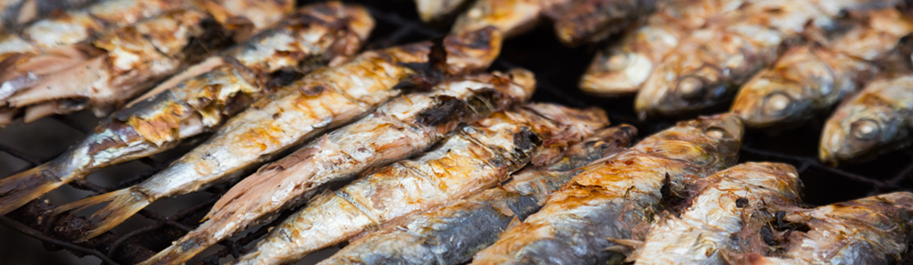
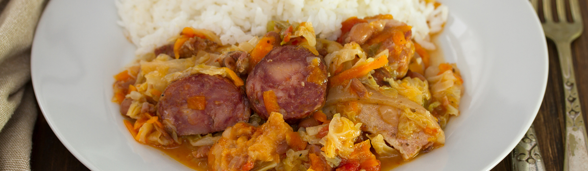
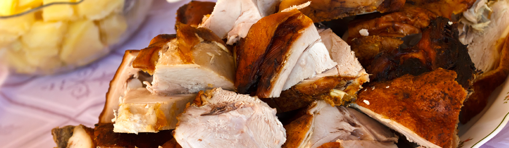
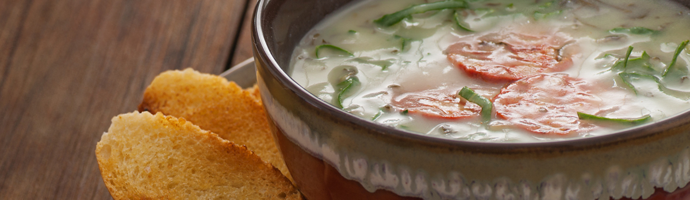
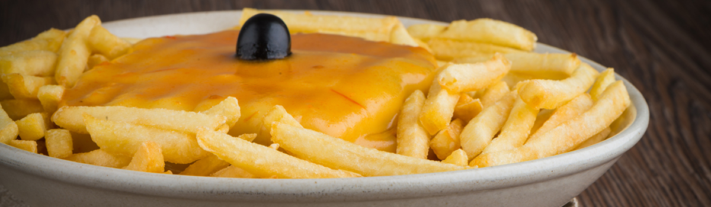
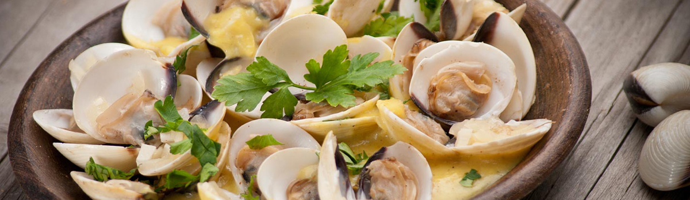
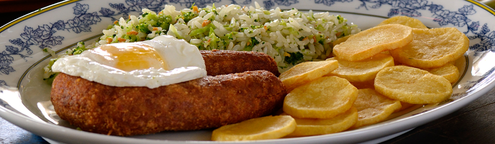
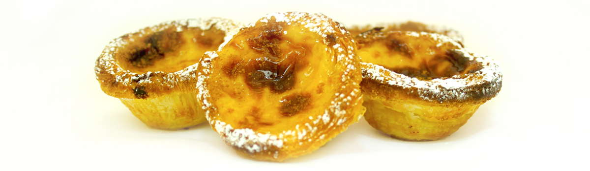

PRATOS TÍPICOS PORTUGUESES
Portugal tem uma gastronomia tão rica e variada como a sua paisagem.
Tradicionalmente, em Portugal recorre-se muito ao peixe, principalmente, ao bacalhau, ao marisco, e às carnes, e em cada região, cada prato é preparado de maneira diferente.
Bacalhau

O bacalhau é, sem dúvida, um dos pratos mais populares e conhecidos da gastronomia Portuguesa. Antigamente, para se conservar o bacalhau, deixava-se a secar ao sol com sal. Hoje em dia, a melhor forma de preservar o bacalhau é armazená-lo envolto em papel resistente ou então congelando-o. Antes de cozinhar o bacalhau, deve demolhá-lo durante algumas horas, para eliminar o excesso de sal.
Há um ditado Português que diz que há mais de 365 maneiras diferentes de se cozinhar bacalhau – uma para cada dia do ano. O método e os ingredientes que eleger para o acompanhar, vão depender do seu gosto pessoal, mas é fácil encontrar pratos muito conhecidos de bacalhau nos menus dos restaurantes. Podemos dar como exemplo o Bacalhau à Lagareiro, prato de bacalhau assado no forno com cebola, azeite e batatas a murro. Em alternativa, o Bacalhau com Natas, assado no forno com um molho cremoso de bechamel e batatas, o Bacalhau à Brás, frito com batatas, cebola e ovos ou ainda o Bacalhau à Gomes de Sá, salteado com batatas e ovos cozidos, entre muitas outras combinações possíveis.
Esta iguaria também se pode apresentar sob um filete salgado de bacalhau ou ainda em fatias finas, transformando-se num fenomenal pastel de peixe que se cozinha no forno. Uma outra forma bem simples que os portugueses gostam de comer o bacalhau é, por exemplo, no Natal, quando se coze a vapor e se serve com repolho, ovos cozidos e outros legumes.
Sem dúvida que durante a sua visita, encontrará bacalhau em muitos restaurantes, assim como nas casas das famílias portuguesas. Se esta é a sua primeira visita ao Porto, sugerimos-lhe provar alguns destes pratos, já que pode experimentar combinações muito saborosas. Ainda assim, o bacalhau não é consensual, mas mesmo que depois não goste, vale a pena provar pela experiência.
Sardinhas e outros peixes e mariscos frescos

Portugal tem uma ampla costa no Atlântico, razão pela qual a pesca é uma fonte natural de rendimento e tem do melhor peixe que se pode provar na Europa. A sardinha grelhada é muito saborosa, e sendo muito abundante na nossa costa, é uma opção barata. As sardinhas servem-se tradicionalmente nos próprios grelhadores, nos restaurantes junto à praia ou em festas, como por exemplo, nos dias 23 e 24 de Junho, na festa de São João no Porto, servindo-se com batatas e pimentos assados.
Para além da famosa sardinha, há uma grande variedade de outros peixes e mariscos frescos disponíveis em Portugal, e mais baratos do que em outros países, como os berbigões, mexilhões, caranguejos e camarões de vários tamanhos. As amêijoas também são muito populares e utilizam-se em muitas receitas típicas portuguesas. Também poderá encontrar facilmente robalo, dourada, cherne e imensos outros peixes frescos, dentro destas opções geralmente mais caras, mas muito saborosas quando assadas com sal, alho e um pouco de azeite, ou então preparadas com molhos sofisticados, dependendo do restaurante que visitar. Outras sugestões populares são os filetes de pescada em ovo batido, o polvo cozido ou assado ou ainda as lulas fritas ou estufadas. Estes pratos servem-se normalmente com batatas cozidas ou fritas, salada ou com arroz típico português.
Cozido à Portuguesa

Para muitos este é considerado o mais tradicional prato português. Há muitas maneiras diferentes de confecionar o cozido e estas variam de região para região, ainda que os ingredientes se baseiem geralmente em carnes bovina, suína, frango e linguiça com feijão, grão de bico, batatas, nabos, repolho, cenouras e arroz.
A carne é cozida numa panela de pressão com muito pouca gordura e em diferentes etapas se adicionam os legumes e os chouriços. O caldo de carne guarda-se para cozinhar o arroz. É um prato saboroso e, apesar de todos os ingredientes, é um prato ligeiro de digerir, por causa da ebolição e do vapor da carne. Contudo, esta é uma refeição demorada para preparar, pelo que normalmente se cozinha em ocasiões especiais ou no tradicional almoço de Domingo.
Leitão

Os portugueses gostam de comer pratos com carne de porco, por isso é muito frequente encontrá-los em diversos menus, desde a carne de porco à alentejana, servida em cubos com amêijoas e castanhas, passando pela simples perna de porco assada, até ao prato mais apreciado que é mesmo o leitão. Este prato serve-se de norte a sul de Portugal, incluindo nos casamentos, mas o mais popular vem da região da Bairrada, mais precisamente da Mealhada.
O método mais tradicional consiste em assar os leitões com um peso entre os 6 e os 8kg, que foram alimentados com bolotas. A carne é temperada antes de se cozinhar com alho, gordura de porco, sal e pimento, e de seguida põe-se no grelhador ou no forno, durante cerca de duas horas, geralmente, em fornos de lenha, com ervas aromáticas, como eucalipto e vides. O resultado é uma carne suculenta e húmida com pele crocante. Se experimentar este prato na Bairrada, não deixe de o acompanhar com o vinho típico da região.
Caldo Verde e outras sopas

A sopa é um prato que se encontra em todos os menus portugueses porque há um abundante cultivo de legumes, muito variados e saborosos. Em Portugal é frequente comer-se sopa diariamente. Desde um creme de legumes até à canja, gazpachos, legumes passados e consomés, há uma grande variedade de oferta, dependendo da criatividade do Chef e da tradição de cada região.
Uma sopa muito apreciada e típica da região do Norte é o caldo verde, feito com base de cebola, batata, repolho, cortado em finas rodelas e acompanhado com um bocadinho de salpicão. É uma sopa rústica e muito quente, frequentemente servida nas festas e apreciada por todos, dos jovens aos mais velhos.
Francesinha

Entre os anos 50 e 60, este prato apareceu em Portugal, tornando-se especialmente famoso no norte do país, sendo hoje em dia, um prato emblemático da cidade do Porto. A Francesinha é uma grande sande com diversas carnes, fiambre, salpicão, ovo e, às vezes, bacon, coberto por queijo derretido e um molho de tomate, cerveja e pimenta. A ideia surgiu a partir do original francês Croque Monsieur, mas foi adaptada aos portugueses, à sua cultura e ao seu sabor. Geralmente serve-se com batatas fritas, mas é o seu molho, ligeiramente picante, que lhe confere um delicioso sabor. Todos apreciam a Francesinha, tanto os adultos como os mais pequenos. Há uma versão mais leve, em pão torrado, que tem ingredientes parecidos, à exceção da carne e do molho light. Deve definitivamente prová-la, qualquer que seja a sua versão.
Amêijoas à Bulhão Pato

Outro famoso prato de marisco são as amêijoas à Bulhão Pato. Este é um prato típico português geralmente servido no verão, onde as amêijoas cozem a vapor, num caldo ligeiro com azeite, alho, vinho branco, coentros, limão e pimenta. Ainda assim, também poderá encontrá-lo noutras estações do ano e apreciá-lo como entrada ou prato principal. Para preparar o molho, frite o alho em azeite, adicione o limão e vinho branco e, no fim, os coentros. As amêijoas cozem a vapor no caldo até estarem completamente abertas. Este prato é um dos favoritos dos restaurantes de praia onde as panelas são levadas à mesa para que possa mergulhar o pão nos molhos do cozinhado.
Alheiras

A alheira é um chouriço fumado português, cujos principais ingredientes são a carne de frango, porco, pão, azeite, alho e paprika. A carne de caça, pato, pimentos e fiambre também é utilizada. Com a forma de uma ferradura, a alheira é geralmente feita de intestino de porco recheado com uma pasta fina de carne picada e pão.
A alheira é produzida artesanalmente na região nortenha de Trás-os-Montes e na região da Beira Alta, sendo a variedade mais famosa a que é produzida em Mirandela. Pode ser cozinhada no barbecue ou frita somente na sua gordura, ou ainda parcialmente cozida e depois acabada de cozinhar no forno. Nos dias de hoje serve-se normalmente com arroz e batatas fritas, mas o mais tradicional é servir-se com legumes cozidos ou salteados.
A origem da alheira remonta aos finais dos séc. XV, principios do século XVI, e associa-se à presença dos judeus em Trás-os-Montes, uma vez que estes não podiam comer o chouriço tradicional com carne de porco, então criaram esta chouriça fumada para que não fossem facilmente identificáveis pela inquisição católica. Posteriormente, decidiram refiná-la com outros tipos de carne. A receita tornou-se popular juntos dos cristãos que a produzem com carne de porco.
Sobremesas Portuguesas e o Pastel de Belém

Conhece-se a fama dos portugueses de serem grandes apreciadores de doces, pois por este país há literalmente centenas de sobremesas como pastéis, tartes, mousses, pudins e misturas muito saborosas de ovo com açúcar para comer à colher. Cada região tem a sua própria especialidade, pastéis e sobremesas conventuais desde o século XV. Nesta altura, o açúcar foi introduzido às receitas, convertendo-se num abundante ingrediente gastronómico das colónias portuguesas, e também os ovos, especialmente as gemas, que eram abundantes, já que Portugal era o maior produtor europeu de ovos (as claras eram usadas para fabricar as hóstias e as gemas foram então usadas nos doces para aproveitar o que sobrava do ovo). As amêndoas são outro ingrediente tradicional muito usado nos doces conventuais, assim como a canela. É por isso que as sobremesas Portuguesas são sempre tão doces. O famoso pastel que se desenvolveu na cozinha conventual deu origem ao pastel de nata. Apesar de existirem muitas variantes, a receita original em Belém (Lisboa) é um segredo muito bem guardado. Esta é uma das mais famosas sobremesas portuguesas que tem vindo a deixar a sua marca noutros países.